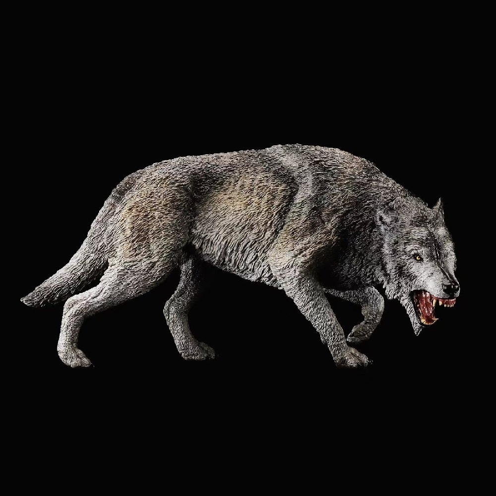
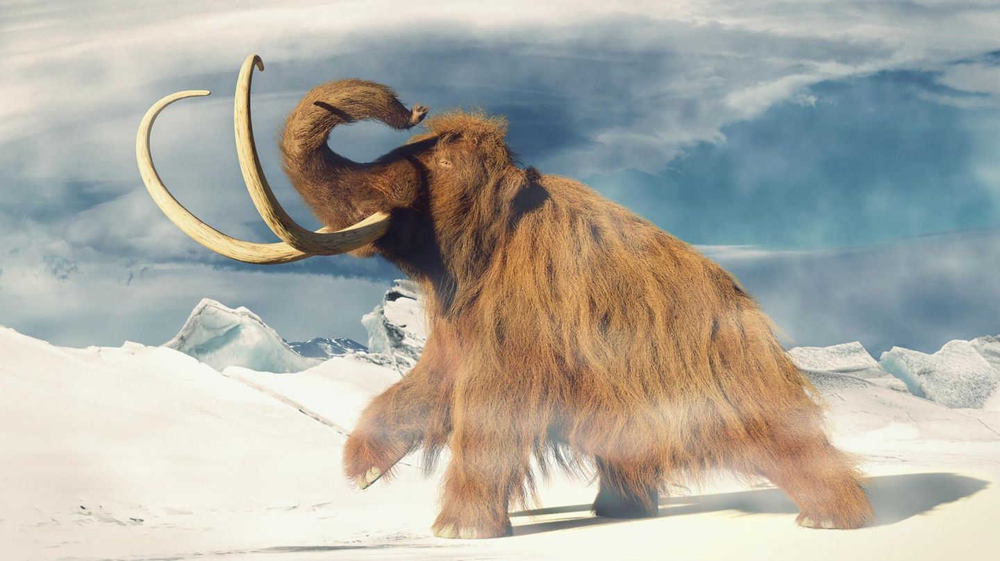
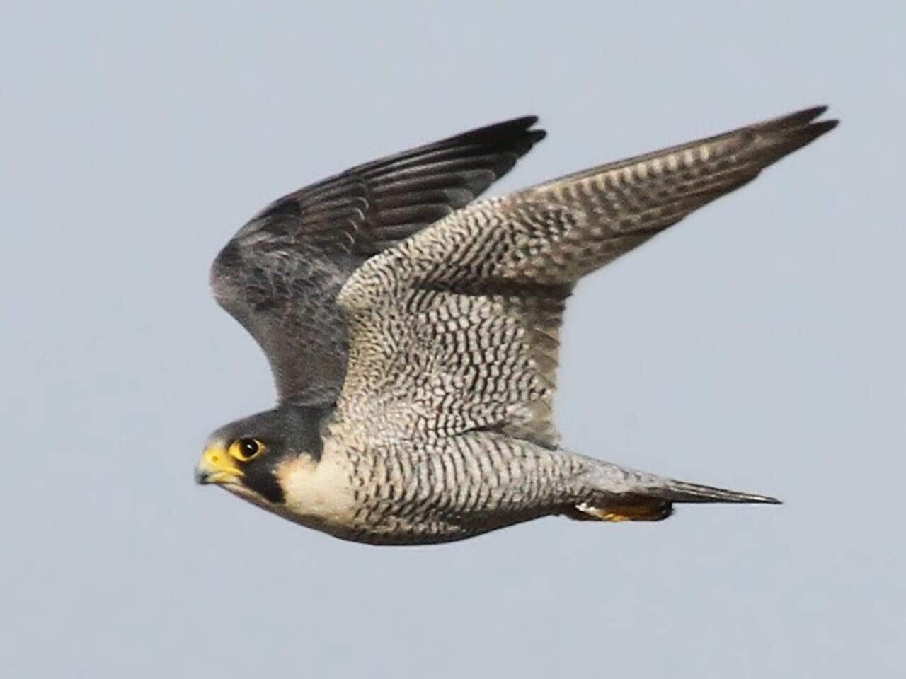

Estudiante de Ingeniería en Sistemas Computacionales con experiencia en liderazgo de equipos de desarrollo de aplicaciones móviles y administración básica en BD. Enfocado en resolver problemas con soluciones prácticas y eficientes.
Estudios
Habilidades
Me gustan los deportes en general, he jugado básquetbol, fútbol, vóleibol, tenis, béisbol, ciclismo, senderismo y patinaje (me caí). Los videojuegos y la repostería son mis aficiones ya que me distraen y me divierto. Sin embargo mi pasatiempo favorito siempre será escuchar música ya que me relajo y puedo hacer otras actividades mientras escucho mis canciones preferidas.
|    | Comparación de Animales | |||
|---|---|---|---|---|
| Nombre Científico | Época | Dieta | Hábitat | |
| Lobo Gigante | Aenocyon dirus | Pleistoceno | Carnívora | Norteamérica |
| Mamut | Mammuthus | Pleistoceno | Herbívora | Eurasia y Norteamérica |
| Halcón Peregrino | Falco peregrinus | Actual | Carnívora | Casi mundial |